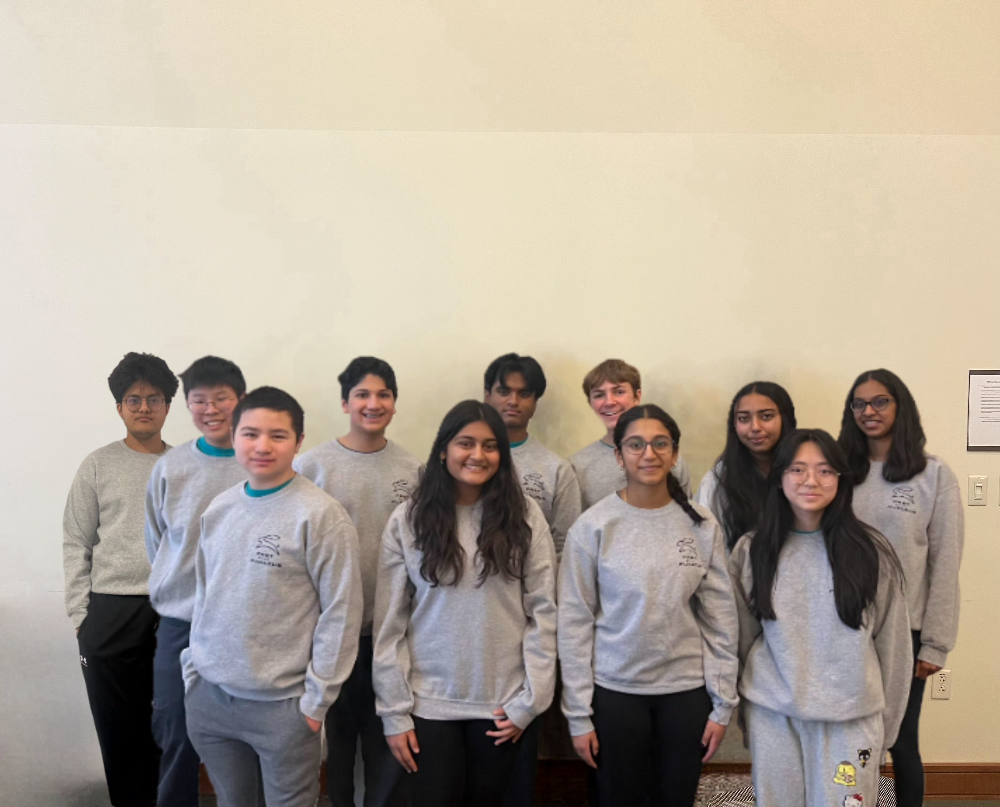
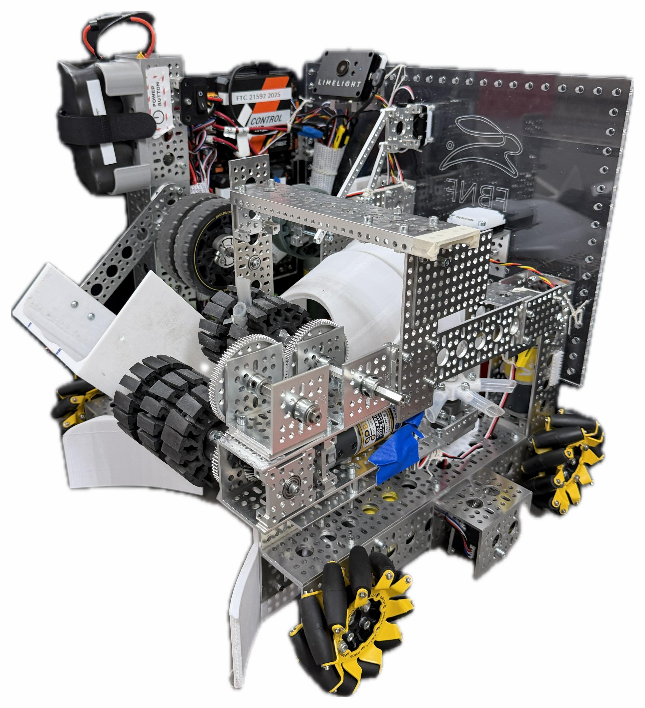
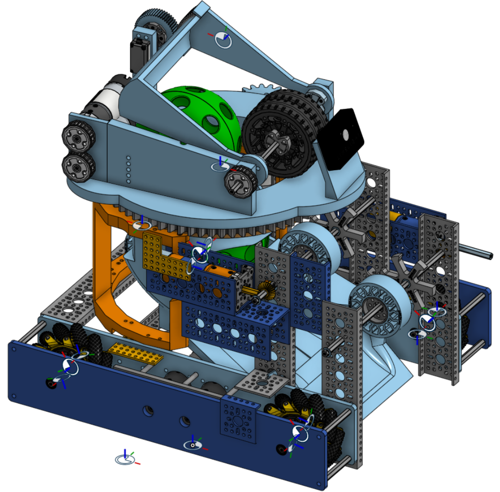
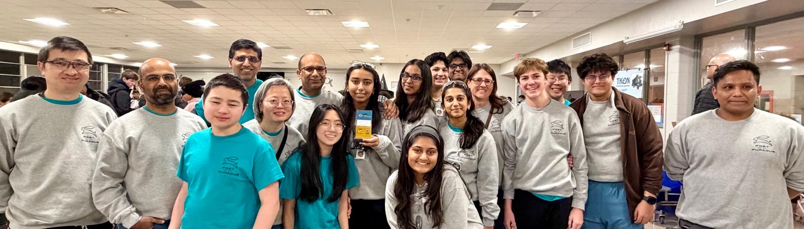
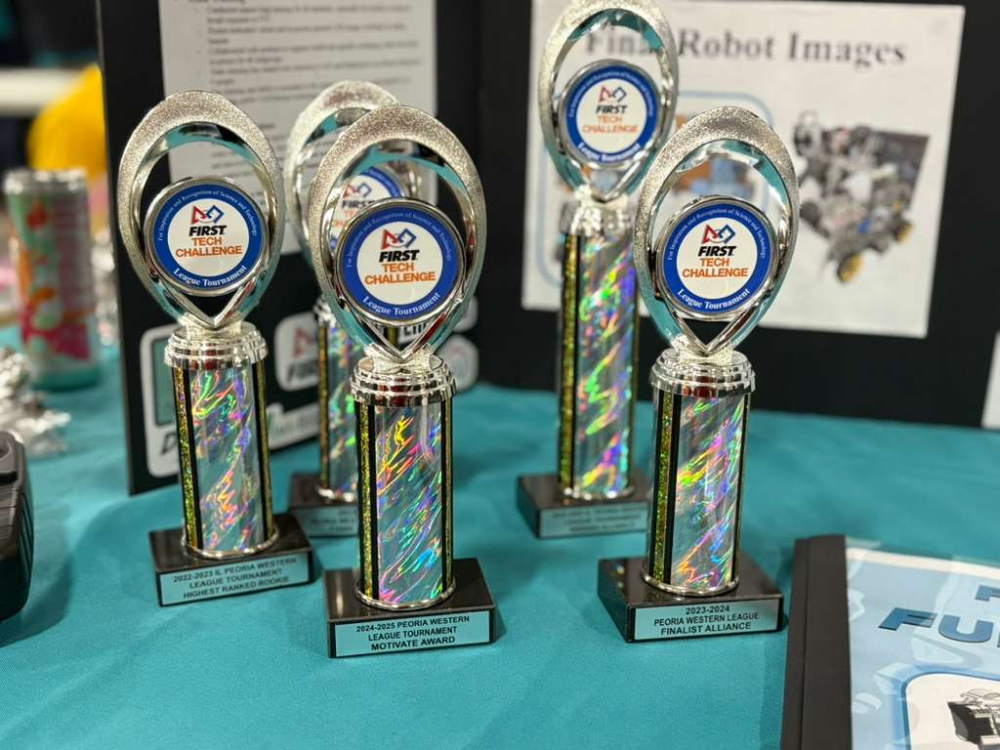
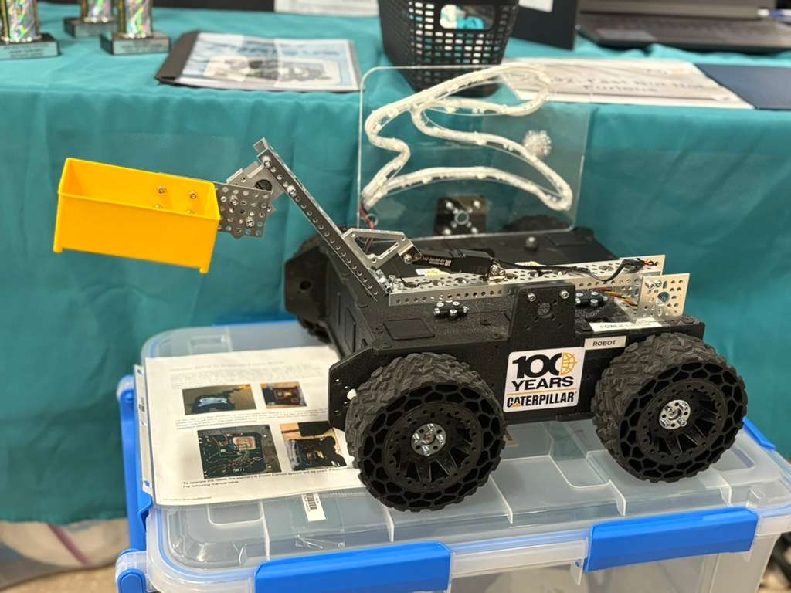
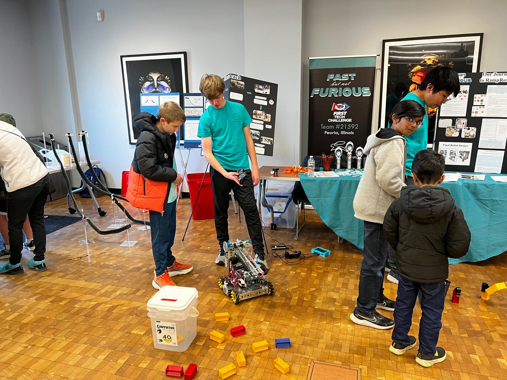
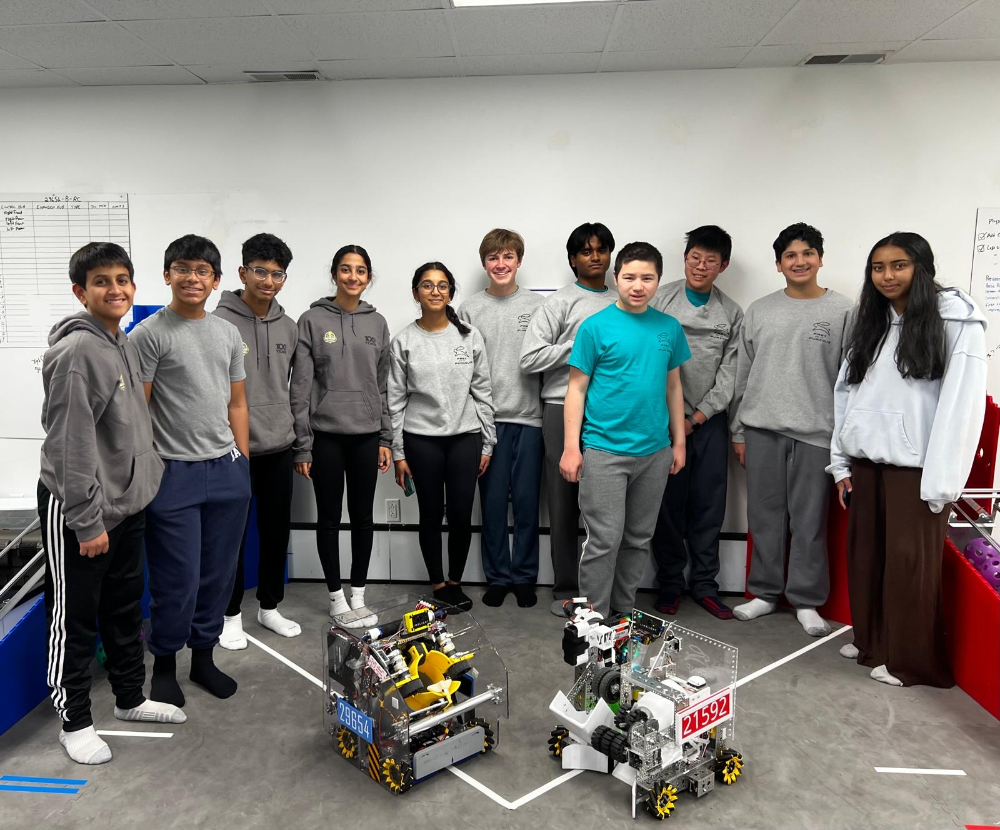
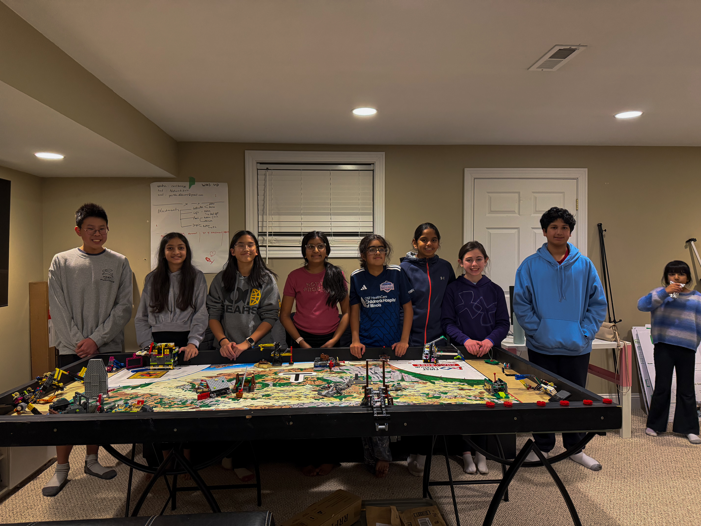
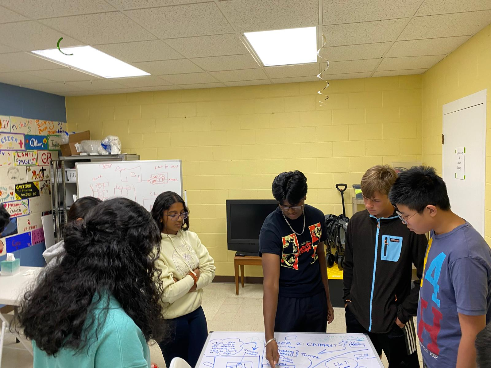

From our first meets through the Illinois Championship, this season was about
building consistency, improving match by match, and growing stronger as a team
in both competition and outreach.

Average Score--
Best Score--
Win Rate--
Average Auto--
Peoria Record--
State Record--
Score Progression Across the Season
Meet RampRover

Our competition robot, RampRover, features a two-stage active intake,
a gravity-fed tunnel transfer, and our custom CAMJET launch system
(CAM-Activated Motion & Joint Ejection Tool). The intake uses two stages of gecko
wheels driven by a 1150 rpm high-torque motor through a multi-gear system,
designed to accept only one artifact at a time while maintaining compression throughout
the flow.
The transfer mimics a slide, using gravity to guide artifacts toward the launcher.
Iterating on 3D-printed inlets and adding a hood cover solved early stacking issues,
and a horizontal transfer servo with surgical tubing gives artifacts the final push
to the CAMJET.
The CAMJET itself can fire 3 artifacts in 3 seconds. It uses a
balanced CAM lobe, tuned by optimizing mass distribution and infill proportions,
paired with a rubber-band tensioner to prevent premature ejection. Getting here meant
going through beauty-blender and 3D-printed shovel prototypes first, each teaching us
something about consistency and rapid-fire performance.
Physics-Driven Software
Math and physics guided both our robot design and our software stack. Early
launch-path inconsistencies were traced to the Magnus Effect, where a
spinning artifact drifts due to pressure differences described by Bernoulli's Principle.
We modeled it with the scalar lift equation to set an initial test angle.
Instead of fixed ticks-per-second values, our software now auto-tunes velocity
and power. Using our Limelight vision system, we compute distance from
AprilTags and derive a target TPS through projectile-motion equations. Combined with
automatic alignment (averaging min/max angle offsets at each distance), our
driver-assist features achieved 91% scoring accuracy.
We verified all calculations with our high-school AP Physics teacher.
For autonomous, we developed action classes for motor control, launching sequences,
and servo management. A distance-sensor-triggered action class automatically activates
intake and the horizontal transfer servo once the first artifact launches, cutting
cycle time. We built 7 autonomous paths for maximum alliance
flexibility.
Robot 2: Our Advanced Learning Platform

Alongside RampRover, we built a second robot as an advanced learning platform.
Robot 2 moved away from standard parts entirely, experimenting with a
belt-driven, laser-cut plexiglass chassis and a fully integrated
turret system, allowing it to shoot from any position and angle
on the field.
While RampRover was ultimately chosen for competition due to its consistency and speed,
Robot 2 expanded our CAD skills across the entire team and let us explore ideas
we brought back to improve RampRover's design.
Competition Journey

This season was about steady improvement rather than one big breakthrough. From our
early Peoria meets to the Illinois Championship, we focused on building a robot that
performed reliably and refining our match strategy event by event.
By Meet 4, the progress was clear. We played strong qualification
matches, improved our standing, and were selected into alliance play. It was a turning point
that showed how far we had come in both performance and confidence.
At the Illinois Championship, we competed at a higher level and
presented the full scope of our work, from design iteration and software to outreach
and team culture. Just reaching State was meaningful, but being able to represent our
season's growth on that stage made it even more rewarding.
Awards & Recognition

We were honored to earn recognition that reflected both the technical and team-building
sides of our work:
Design Award - Peoria Western League Tournament
FIRST Leadership Award Finalist - Illinois Championship
Sustain Award, 2nd Place - Illinois Championship
These awards validated our engineering process, our documentation through portfolio and
judging presentations, and the collaborative culture we built across programming,
mechanical, CAD, and communications.
Community & Outreach

Bunny Bot at Ignite Peoria

Engineering Day at Riverfront Museum

Match play with rookie team High Voltage (#29654)

Mentoring IncrediBots FLL (#39273)
Our biggest outreach initiative was Bunny Bot, a collaboration with
the Society of Women Engineers to design and build a robot that inspires youth interest
in STEM. Bunny Bot debuted at Ignite Peoria to over 4,000 attendees,
traveled to Peoria High School's blood drive, and is now available to check out from
the Caterpillar Library, creating a sustainable avenue for other organizations to
contribute to our mission.
Beyond Bunny Bot, we stayed busy with community engagements throughout the year:
Free 3-day CAD workshops teaching kids Onshape
Engineering Day at Riverfront Museum, demoing our robots to
3,700+ attendees and recruiting 3 new rookie members
STEM kits using light-up fruits to teach electric currents and batteries
Showcases at Banner Elementary's fall festival, Dunlap Library tech day, and with
Boy Scouts
Mentoring the IncrediBots FLL team (#39273) and introducing them to FTC
Collaborating for match play with rookie team High Voltage (#29654)
How We Work
This season we expanded our team with 3 rookie members, a new mentor, and a new head
coach. To keep everyone aligned, we followed the Agile development
philosophy, using Kanban boards, Gantt charts, and meeting minutes to track
tasks, deadlines, and responsibilities.

We also introduced World Café, a structured brainstorming process
where subgroups rotate through different robot subsystems (intake, launch, transfer,
and more), building on each other's ideas. This increased engagement from every team
member and generated more ideas early in the season, making it an integral part of our
design process.
Season-long training sessions gave all members exposure to CAD, programming, and
mechanical work. With the help of our design and programming mentors, we ran both
virtual and in-person workshops so everyone could contribute meaningfully regardless
of experience level.
Looking Ahead
More than anything, this season gave us a foundation to build on. We leave it with
stronger experience, clearer direction, and a better sense of who we are as a team.
The lessons from every meet, outreach event, and late-night build session add up,
and we are carrying all of it into next season.
We aim to keep growing: deeper technical skills, broader community impact, and an even
stronger team culture. We're proud of what we accomplished, and excited for what
comes next.